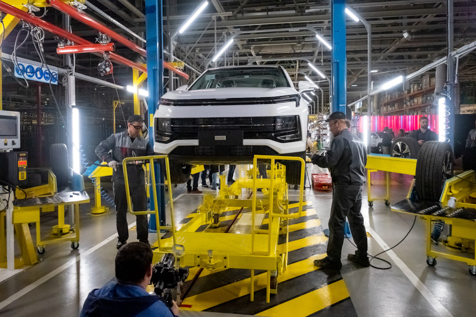

Перезапуск "Москвича" на базе бывшего завода Renault — событие знаковое, к которому точно не
стоит относиться просто как к показному наклеиванию советского шильдика на китайские малолитражки. В этом я
убедился, поговорив с сотрудниками предприятия на открытии производства.
Для неподготовленного взгляда, впрочем, все выглядит действительно безнадежно просто. На
первом этапе работ — сборка не просто отверточная, а крупноузловая DKD/SKD-0. Автомобиль сначала полностью
собирают до товарной готовности на заводе в Китае, потом подразбирают и везут на московский завод. Кузовные
детали не демонтируются, салон идет в сборе кроме отдельных деталей. Стоимость автомобиля, на самом деле, от
всего этого только увеличивается — расходы на сборку-разборку, логистика…

В разговоре сотрудники разного ранга благодарили московское правительство, и это не показное.
Именно финансовая поддержка мэрии, выкупившей завод у Renault, позволило предприятию выжить и сохранить
команду. Которая имеет опыт производства в России более полутора миллионов автомобилей французской марки.
Это не всем известно, но российские специалисты, среди которых ныне замглавреда “За рулем”
Никита Гудков (beepoff ), вносили ключевой вклад в разработку моделей для российского рынка, в частности,
Kaptur и Arkana. То есть на заводе сформировался серьезный инженерный коллектив, у которого работы было все
меньше, а теперь неожиданно появилась реальная перспектива создания собственного автомобиля. На это, как
рассказал мне руководитель проекта производства Максим Клюшкин (его полное интервью есть в видео), может
уйти 8 лет.

Заявленные планы — серьезные. До конца года тут соберут 600 машин, около 200 будут в
электрической версии. Продажи начнутся в начале нового года. Планы на следующий год — уже 50 000 авто, через
год, с внедрением “мелкой” CKD-сборки — вдвое больше (с отношением DKD к CKD как 50:50). И 125000 авто в
2025, включая 25000 электромобилей. Это серьезные цифры, но реализуемые. Не только при росте благосостояния
россиян, но например, в ситуации, когда других автомобилей на рынке по каким-то причинам просто не будет. В
любом случае, именно поэтому для старта был выбран проект компактного кроссовера — сегмент B+ SUV в России,
в котором в последние годы правили бал Creta, Duster и Kaptur, наиболее перспективный с точки зрения продаж.
Сборка первой модели “возрожденного Москвича” была организована в рекордный срок — всего за 3-4 месяца. Для
сборки техники “восточного партнера” было закуплено оборудование, включая новый конвейер. Во время
презентации нам показали только линию SKD-сборки.